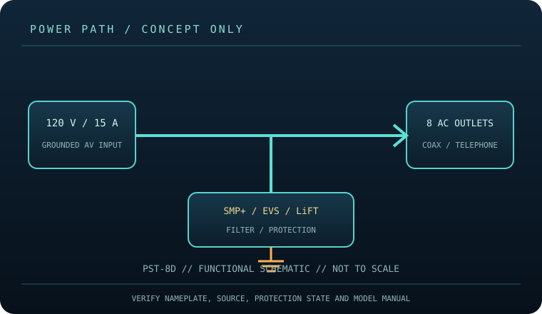

[ SURGE PROTECTIVE DEVICE // STATIC REFERENCE ]
Furman PST-8D Power Conditioner
Eight-outlet 120 V AV conditioner using SMP+, EVS and LiFT; protected coax/telephone paths. Furman listing does not state a joule figure. This record describes the named model only; verify nameplate, region, revision, approvals and current manufacturer instructions before deployment.

SAFETY SCOPE: Surge protective devices do not provide outage runtime, guarantee protection from every event, repair defective grounding, or replace qualified electrical installation. Capacity and topology below are based on the cited product literature; where a value is not published, it is not guessed.
Model specifications and topology
| Manufacturer / exact model | Furman PST-8D — named North American model; revisions and region-specific suffixes must be checked on the actual label. |
|---|---|
| Class / topology | Point-of-use AV conditioner with Series Multi-Stage Protection Plus (SMP+), Extreme Voltage Shutdown (EVS), Linear Filtering Technology (LiFT), and isolated digital/video outlet banks. It does not provide battery backup. |
| Electrical capacity | 120 V AC, 15 A maximum, 60 Hz; eight NEMA 5-15R outlets and AV line protection per Furman model literature. Use the model nameplate and confirm available branch-circuit capacity before connecting a rack or theater system. |
| Surge rating | Furman describes SMP+ surge protection, EVS overvoltage shutdown and LiFT filtering. No joule-energy rating is given in the cited PST-8D listing, and a transient-energy number is not substituted for a load rating. |
| Outlets / connection interface | Eight AC outlets; Furman lists telephone/satellite/cable in-line protection on this model. Verify jack type, number, and direction on the device label/manual. Keep source and protected signal connections on their designated ports. |
| Compatibility | Designed for grounded 120 V AV equipment compatible with the outlet configuration. Isolated outlet groups help manage specified AV-device noise coupling; they do not increase supply capacity. Do not connect loads whose total exceeds the unit’s marked limit. |
| Battery / runtime | No battery or stored-energy runtime. This product cannot ride through an outage; connected loads lose power when the source or device disconnects. |
| Monitoring / lifecycle | Use only the model’s labeled indicators, alarm, breaker or status display. These features are not proof of building-ground integrity; check manufacturer replacement/failure instructions. |
| Installation / revision control | Read the full model-specific manual and nameplate before installation. Match voltage, phase, current, connector, signal-line type, enclosure rating, revision and approvals; similar product-family names are not evidence of interchangeability. |
Compatibility and application
Designed for grounded 120 V AV equipment compatible with the outlet configuration. Isolated outlet groups help manage specified AV-device noise coupling; they do not increase supply capacity. Do not connect loads whose total exceeds the unit’s marked limit.
Point-of-use AV conditioner with Series Multi-Stage Protection Plus (SMP+), Extreme Voltage Shutdown (EVS), Linear Filtering Technology (LiFT), and isolated digital/video outlet banks. It does not provide battery backup.
Confirm the equipment input-voltage range, connector type, circuit capacity and signal path from both equipment manuals. A higher joule number does not increase the permissible connected load and does not, by itself, define clamping behavior or protection lifetime.
Safety, inspection and limits
- Maintain grounding and use a properly rated circuit; never defeat earth, overload outlets, daisy-chain conditioners or use a damaged cord. Route coax/telephone connections only as instructed. EVS may switch off the load during excessive input voltage; do not bypass the shutdown.
- Inspect cord, plugs, case, status indication and signal jacks. Abnormal heat, smell, repeated shutdown or damage warrants disconnecting the device. Follow Furman’s model manual for tests and service; never open energized equipment. No battery or runtime is present.
- Surge protection reduces specified transient exposure but cannot guarantee equipment survival from lightning, wiring faults, sustained overvoltage or every conducted path. Follow the model manual and applicable electrical code.
Manufacturer sources and safety references
- Furman — PST-8D product pageManufacturer specification for protection, filtering, outlets and supported AV paths.
- Furman — PST-8D owner’s manual (PDF)Model-specific use, connections and safety instructions.
- NFPA — NFPA 70 (National Electrical Code)Electrical installation and grounding requirements depend on the adopted local code.